0.3. Математическая модель деформирования оболочек
0.3.1. Геометрия координатной поверхности
0.3.2. Геометрические соотношения
0.3.3.2. Перекрестно армированный материал
0.3.3.3. Нелинейно-упругий материал
0.3.3.4. Интегральные физические характеристики
0.3.4. Уравнения равновесия (движения) и граничные условия
0.3.5. Характеристика соотношений теории оболочек
0.3.1. Геометрия координатной поверхности
Положение
точек координатной поверхности оболочечного элемента определяются правой
системой гауссовых криволинейных координат
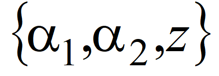 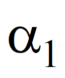 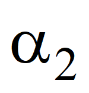 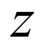 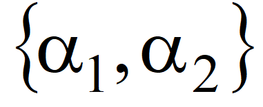
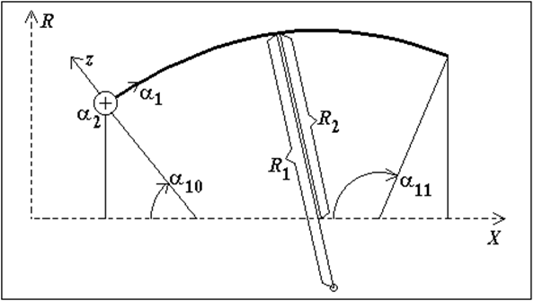 |
|
|
Рис. 1 |
Соответствующие
выбранной системе координат коэффициенты Ламе обозначаются как
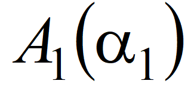 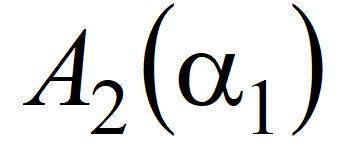 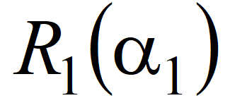 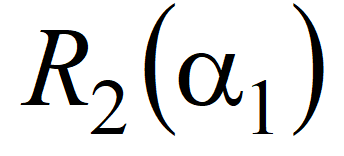 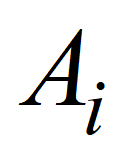 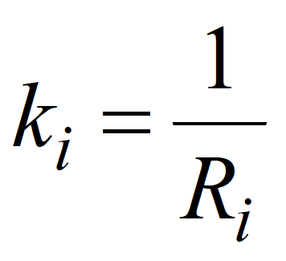 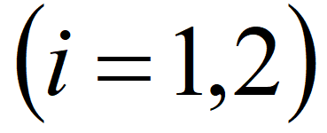
|
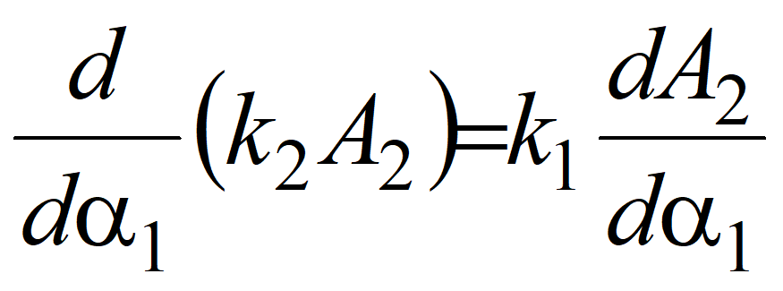 . |
(1) |
Вводятся следующие обозначения:
|
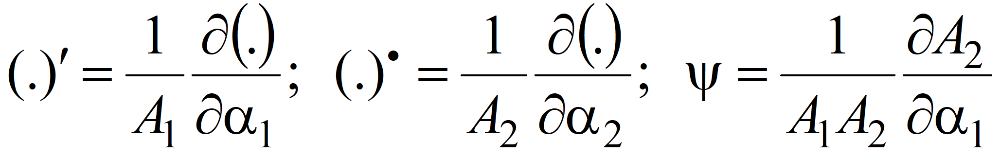 . |
(2) |
0.3.2. Геометрические соотношения
В геометрических соотношениях принимается следующие гипотезы теории оболочек:
|
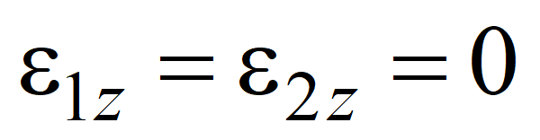 . |
(3) |
Тогда
углы поворота нормалей к координатной поверхности оболочечного элемента
выражаются через перемещения
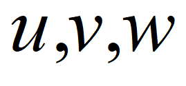
|
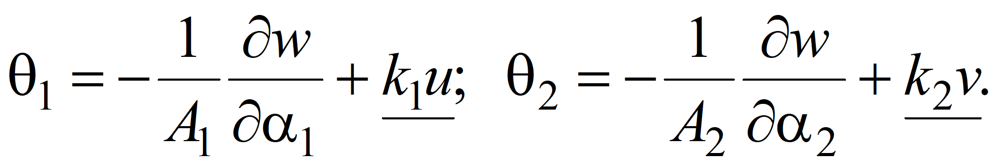 |
(4) |
Положительные направления перемещений координатной поверхности и поворотов нормалей показаны на рис. 2.
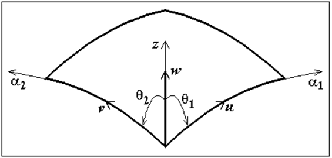 |
|
| Рис. 2 |
Компоненты тангенциальной деформации координатной поверхности оболочки (удлинения и углы сдвига) вычисляются по формулам
|
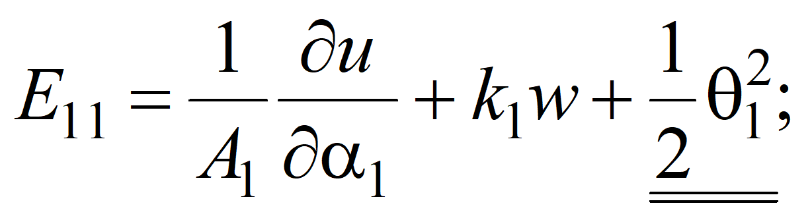 |
(5) |
|
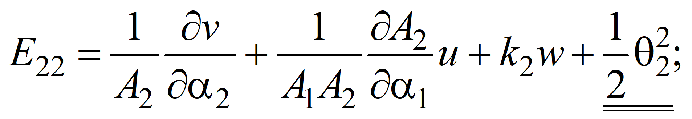 |
|
|
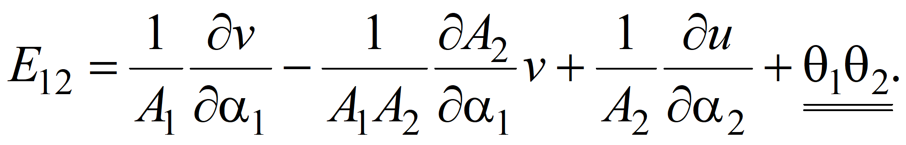 |
Компоненты изгибной деформации координатной поверхности оболочки (изменения кривизн и кручение) вычисляются по формулам
|
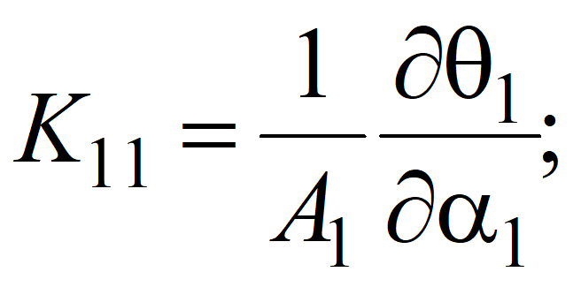 |
(6) |
|
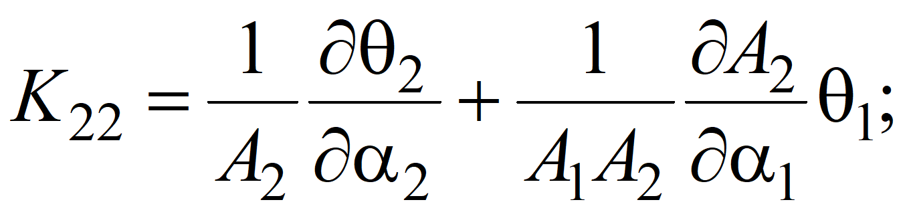 |
|
|
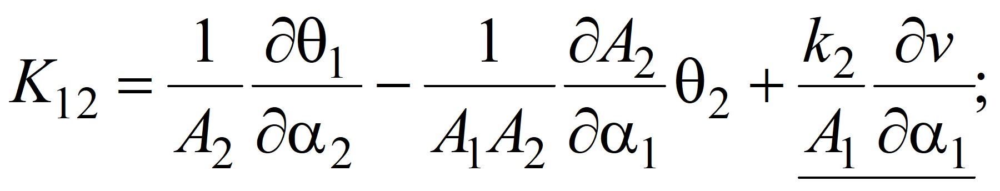 |
|
|
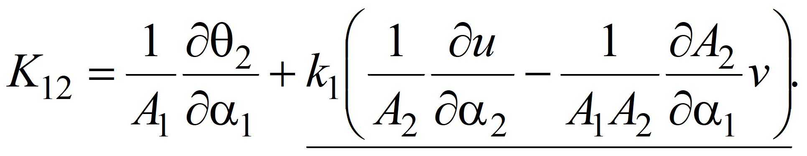 |
Непосредственной
подстановкой соотношений (4) в выражения для
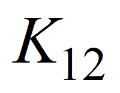 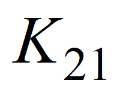
|
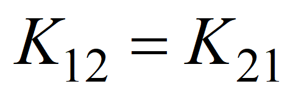 . |
(7) |
Компоненты
деформации в точке оболочечного элемента с координатами
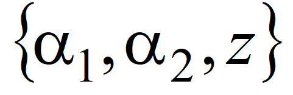
|
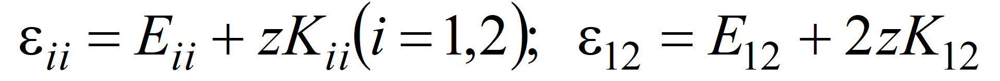 . |
(8) |
Формулами (4)-(8) определяются геометрические соотношения простейшего варианта нелинейной теории оболочек в квадратичном приближении при малых удлинениях и сдвигах координатной поверхности оболочечного элемента.
0.3.3. Физические соотношения
0.3.3.1. Ортотропный материал
Пусть
оболочка составлена из ортотропных слоев (рис. 3), направления главных
напряжений в каждой точке каждого слоя совпадают с направлениями координатных
линий
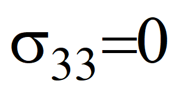 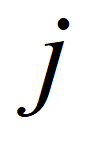 и материал слоев подчиняется
обобщенному закону Гука. В предположении, что
и материал слоев подчиняется
обобщенному закону Гука. В предположении, что
|
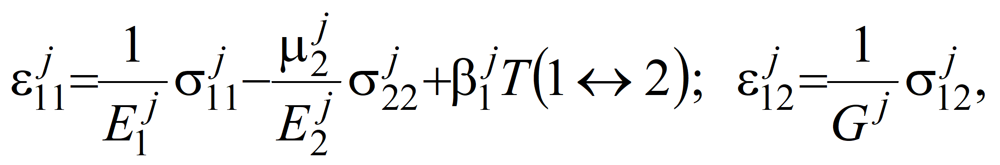 |
(9) |
где 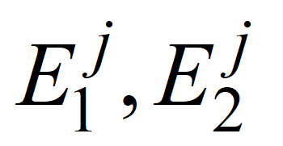 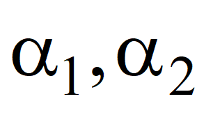
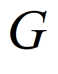
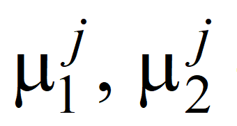
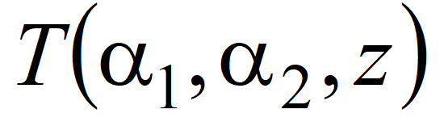
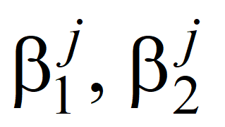
При
этом должно выполняться равенство
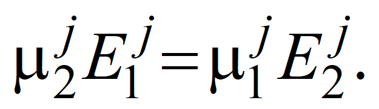
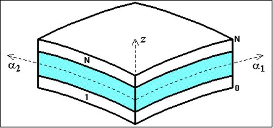 |
|
| Рис. 3 |
Соотношения,
обратные (9), имеют вид (индекс
 для
простоты опущен)
для
простоты опущен)
|
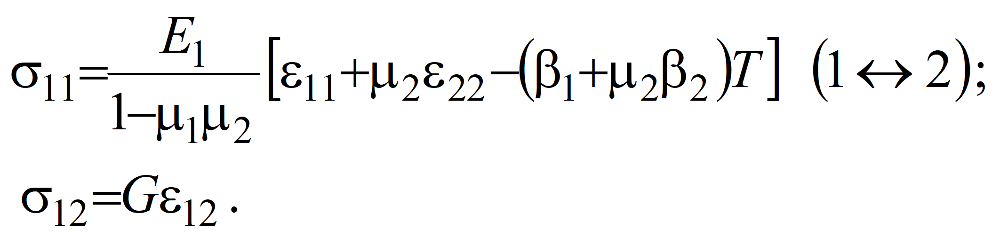 |
(10) |
С учетом выражений (8) соотношения (10) принимают вид
|
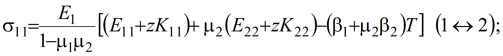 |
(11) |
|
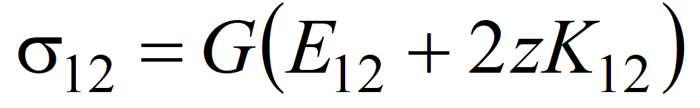 . |
При
|
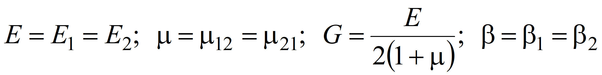 |
реализуется модель упругого изотропного материала:
|
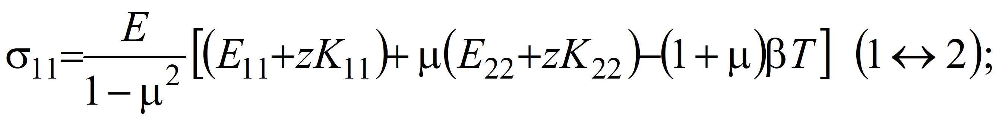 |
(12) |
|
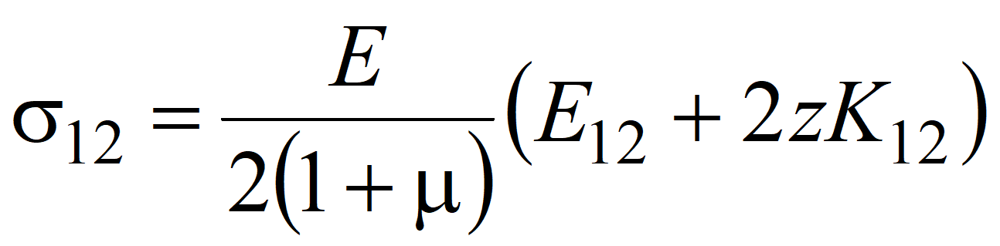 . |
0.3.3.2. Перекрестно армированный материал
Перекрестно
армированный материал состоит из
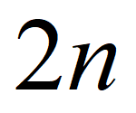 к координатной оси
к координатной оси
 , а другой - под углом
, а другой - под углом
 к этой оси.
к этой оси.
Главные
направления упругости каждого слоя образуют локальную систему координат
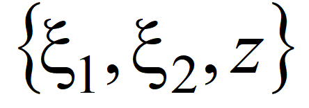
Каждый слой этого материала имеет следующие характеристики:
- модули упругости в направлениях координат ;
- коэффициенты Пуассона (при условии );
- модуль сдвига;
- плотность;
- коэффициенты температурного расширения.
Приведенные (усредненные) упругие характеристики перекрестно армированного слоя (характеристики ортотропного материала в осях ) вычисляются по формулам
| (13) |
где
| (14) | |
После того, как обобщенные деформации
| (15) |
в координатной поверхности оболочки тем или иным способом вычислены, деформации в осях вычисляются по формулам (8).
Деформации в осях армирования на лицевых поверхностях слоя вычисляются по формулам
| (16) |
Напряжения в осях армирования на лицевых поверхностях слоя вычисляются по формулам
| (17) |
0.3.3.3. Нелинейно-упругий материал
Нелинейно-упругий материал имеет следующие характеристики:
- модуль упругости;
- коэффициент Пуассона;
- плотность;
- коэффициент температурного расширения.
Кроме того, нелинейно-упругий материал характеризуется строго выпуклой диаграммой растяжения образцов
| (18) |
Поведение нелинейно-упругого материала описывается соотношениями теории малых упругопластических деформаций [2].
Согласно этой теории зависимость между интенсивностью напряжений
| (19) |
и интенсивностью деформаций
| (20) |
описывается функцией (диаграммой деформирования)
| (21) |
не зависящей от типа напряженного состояния.
Инвариантную к виду напряженного состояния диаграмму деформирования (21) можно построить по диаграмме растяжения (18) следующим образом:
| (22) |
Секущий и касательный модули вычисляются при помощи диаграммы деформирования по формулам
| (23) |
Согласно теории малых упругопластических деформаций зависимости между деформациями и напряжениями имеют вид
| ; | (24) |
| ; | |
| , |
где
| (25) |
Соотношения (18)-(25) устанавливают связь между напряжениями и деформациями для модели нелинейно-упругого материала в рамках малых упругопластических деформаций.
0.3.3.4. Интегральные физические характеристики
Напряжения всегда можно тем или иным способом привести к координатной поверхности . В результате внутренние усилия и моменты определяются через эти напряжения по формулам
| (26) |
Здесь - суммарная толщина оболочки. Положительные направления внутренних усилий и моментов показаны на рис. 4.
| Рис. 4 |
Внутренние усилия и моменты связаны с компонентами тангенциальной и изгибной деформации этой поверхности следующими соотношениями:
| , | (27) |
где
| (28) |
| (29) |
| (30) |
Для упругих материалов коэффициенты квадратной симметричной матрицы определяются по формулам
| (31) |
а температурные члены вектора - по формулам
| (32) |
Интегрирование в соотношениях (31)-(32) осуществляется по всему пакету оболочки. В качестве координатной поверхности можно выбрать либо срединную поверхность произвольного слоя, либо поверхность контакта слоев, либо любую другую поверхность.
Для нелинейно-упругого материала коэффициенты квадратной симметричной матрицы и элементы вектора определяются по формулам, которые будут приведены ниже.
0.3.4. Уравнения равновесия (движения) и граничные условия
Рассмотрим тонкую оболочку, ограниченную контуром .
Пусть к этому контуру приложены внешние усилия и моменты: , , , , причем положительные направления их совпадают с положительными направлениями внутренних усилий и моментов. Кроме того, на контуре могут быть заданы значения компонент обобщенных перемещений , , , .
Помимо контурных нагрузок на оболочку могут действовать также приведенные к координатной поверхности поверхностные и объемные нагрузки .
С учетом инерционных нагрузок приведенные к координатной поверхности нагрузки можно представить в форме
| ; | (33) |
| ; | |
| ; | |
| ; | |
| , |
где
| ; | (34) |
- плотность -го слоя.
Уравнения движения оболочечного элемента, соответствующие вариационному уравнению Лагранжа, в котором использованы геометрические (4)-(8) и физические (27) соотношения, имеют вид
| ; | (35) |
| ; | |
| ; | |
| ; | |
| . |
Статические
и кинематические граничные условия на контурах ( )
записываются в следующем виде:
)
записываются в следующем виде:
|
|
или |
; |
(36) |
|
|
или |
; |
|
|
|
или |
; |
|
|
|
или |
. |
0.3.5. Характеристика соотношений теории оболочек
Соотношения (2)-(36) являются соотношениями теории непологих оболочек вращения. Непологость характеризуется подчеркнутыми одной чертой слагаемыми в соотношениях (4), (6), (35).
Уравнения движения (35) и статические граничные условия (36) соответствуют геометрически нелинейным уравнениям движения и статическим граничным условиям в проекциях на оси, связанные с недеформируемой координатной поверхностью оболочки вращения.
Геометрическая нелинейность в квадратичном приближении в геометрических соотношениях (5) и уравнениях (35) характеризуется подчеркнутыми двойной чертой слагаемыми.
В уравнениях (35) учитывается инерция вращения поперечного сечения пакета оболочечного элемента. Эту составляющую сил инерции учитывают подчеркнутые одной чертой слагаемые в соотношениях (33). Подчеркнутые одной чертой слагаемые в соотношениях (34) учитывают изменение параметров Ламе по толщине оболочки.